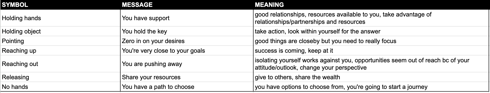
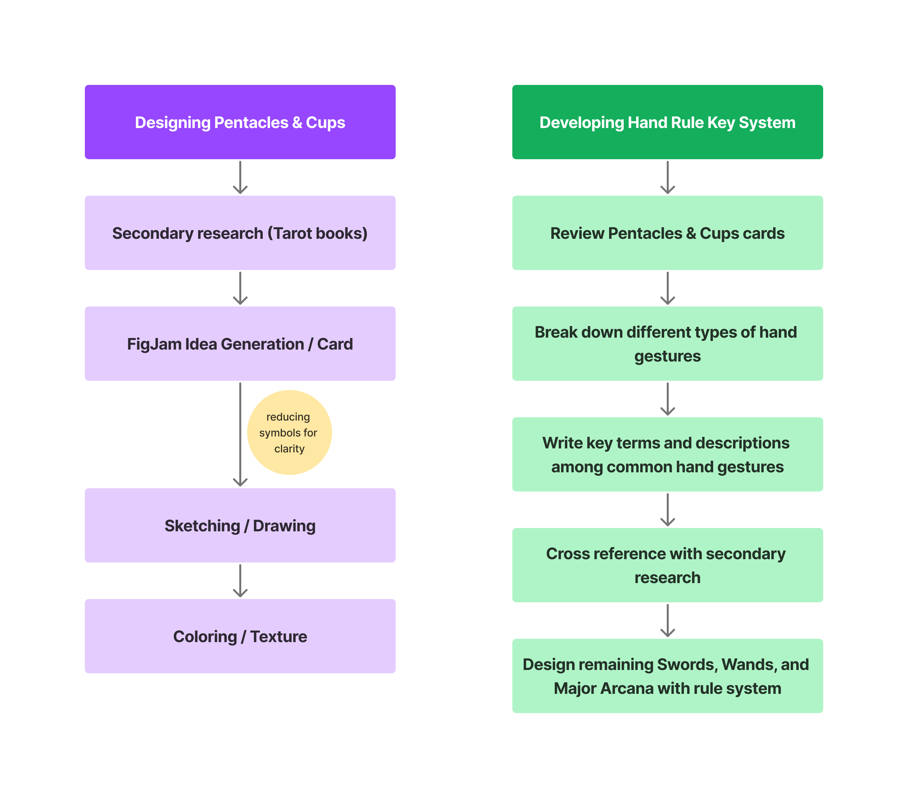

Thesis Weekly Update #4
February 19, 2024: Progress presentation
Midterm Demo Day Plans
For the midterm demo day, I’ll be showcasing print versions of several cards from the Minor Arcana (at least 5 from each of the 4 suits). They’ll be printed from a local shop as opposed to a card manufacturer, just for easy access for iterating on the prints. I’ll cut out the rounded card corners myself for this demo. In addition, I’ll have a print booklet of the card descriptions for the ones I’ll have available, as well as rules and instructions for learning to read with the hand rule system.
I think my biggest challenge will be getting the prints done in time. I need to wrap up several of the Swords cards, then reformat them properly in Photoshop to the right color space and text, which requires me to plan in advance. In addition, I think it'd be a good idea to have some visual representation of my design process for the cards, since it's been so non-linear. However, I'm not entirely sure what the best medium for this would be for Demo Day.
I think having these two materials will allow an audience to have baseline interaction with the cards. They should suffice to form simple layouts, such as a standard Past-Present-Future reading. I also think this is a good opportunity to have feedback on the Minor Arcana cards, since they tend to be more difficult for novice readers to learn. I think faculty members will have feedback on ways of improving how I teach the hand rule system, either within the booklet or by other means (e.g. content for my future video or a website). I also anticipate feedback on how well the cards’ imagery matches the narrative within the booklet.
Meeting with Sam
I met with Sam last week to discuss my presentation for the Thesis Showcase. I’m hoping to create a little psychic shop stand within the classroom that’s hosting all the physical project showcases. This will include:
- A round table with velvet tablecloth, lights, and crystal ball. Cards and booklet will be available here.
- Two chairs for audience members to switch being reader and querent.
- A short activity for audience members to engage in a reading together (maybe have a QR code available for multiple reading options)
- Create a poster (which can be in the room with me or elsewhere on campus) - detailing my project and sample activities
- Film a psychic commercial or how-to reading, which I’d send to Sam
- Print large signs for the psychic shop, which can be done at the IDM Print Lab
I’ll be visiting the space with Sam on Wednesday to get a sense of what my options are. I’m also entertaining an open-tent setup for this psychic shop, just so it doesn’t feel like a simple stall in a classroom.
The poster I’ll be sending to Sam needs to be 24”x36” at a high resolution. I can upload the poster file on the IDM Thesis Showcase form or send it to Sam directly.
Project Updates
This week, I continued drawing and coloring the cards, specifically for the Wands suit. In addition, I arrived at a set of meanings for the seven types of gestures featured across all the cards. Lastly, I took some time to map out what my design process has been at different stages, since it’s definitely been non-linear.



Next Steps
- Print the cards I currently have
- Create booklet on InDesign